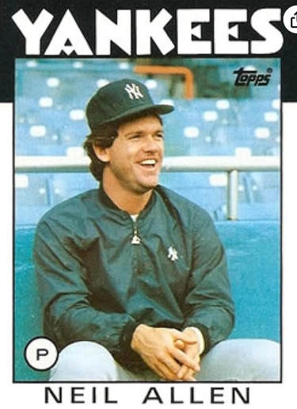

Neil Allen
Career Highlights & Facts
(Facts are AI-generated and may require verification)
- Recorded a rare 9-inning shutout in relief, retiring the first 19 batters faced after entering in the 1st inning.
- Credited with teaching a future star pitcher the grip for a signature sinker that defined a career.
- Selected in the 11th round of the amateur draft after beating a future major league pitcher 1-0 in a high school game.
Would you like to find out more about Neil Allen?
Player Biography
Neil Allen
April 21, 2017
/
in
BioProject - Person
/
by
admin
Thomas J. Brown Jr.
Neil Allen enjoyed three good years as a closer with the New York Mets in the early 1980s. However, over the course of his 11 years in the majors (1979-1989), the righty bounced back and forth between starting and relieving. Yet despite a rocky road professionally and personally, Allen’s native enthusiasm remained intact. That made him well suited for his long second career in baseball – from 1995 on, Allen has been a successful pitching coach. This man has faced adversity at several times in his life, much of it stemming from alcoholism. Each time, he has relied on baseball and his cheerful nature to help him overcome obstacles and continue to make contributions to both the game and his family.
Neil Patrick Allen was born on January 24, 1958 in Kansas City, Kansas. He was the youngest of four children, all boys, born to Robert “Bob” Allen, an elevator mechanic, and his wife Betty.
1
Betty Rae Allen (née Riley) worked for the International Brotherhood of Boilermakers, which is headquartered in Kansas City. “She was a fierce supporter of her four boys and all their sporting activities. She had a particular love for all things baseball.”
2
When Allen was two years old, his father was diagnosed with retinitis pigmentosa, which left him legally blind. Bob Allen still played a big role in young Neil’s life, especially since Bob’s passion was baseball.
“I wasn’t very old when he taught me how to grip a curveball,” Allen said. “That turned out to be my best pitch. My dad would sit in the dugout and help coach during games. He couldn’t see, but he could hear. If he wasn’t hearing the ball hit the catcher’s mitt on time, he would shout, ‘Tempo’ [to me],” Allen remembered.
3
As Allen matured, he developed a major asset as an athlete, a powerful right arm for throwing a baseball or football. He attended Bishop Ward High School in Kansas City, where he was a standout quarterback on his high school football team. He originally planned to attend Kansas State University on a football scholarship. But his life changed during the spring of his senior year, 1976.
Allen was one of the starting pitchers on his high school’s baseball team that year. In one game, he was matched against Terry Sutcliffe, younger brother of future major-leaguer
Rick Sutcliffe
, who was pitching for Van Horn High School. “There were a bunch of scouts there to watch [Terry] Sutcliffe, and I beat him 1-0,” Allen recalls. “All of a sudden, our phone started ringing, with teams saying they were interested in drafting me.”
4
Allen still thought that football was his first sport. He changed his mind after speaking with his father, who counseled him: “Neil, you’re not a rocket scientist and you don’t have the discipline to sit down and do the academic work. Plus, if you play football and get beat up and have your shoulder ruined, then you don’t have either … football or baseball.”
5
New York drafted Allen in the 11th round of the 1976 amateur draft.
6
“The Mets gave me $6,000; about $4,000 after taxes. Man, I thought I was Hugh Hefner. I went out and bought a 1976 Grand Prix with a T-top,” said Allen.
7
After signing his contract with the Mets, Allen went to Marion in the rookie-level Appalachian League. He appeared in six games for the team, collecting two wins and striking out 29 batters in 33 innings. The Mets then moved him to the Wausau Mets of the Midwest League (Class A). He started six games and finished with a 4-2 record.
At the end of the season, Allen returned home to work. While he was working a winter job on the docks of Kansas City, Missouri, he kept thinking that this was the “[h]ardest job ever. Every time I picked up a box, I thought, I have to get to the big leagues.”
8
Allen returned east for the 1977 season. He played for the Lynchburg Mets of the Carolina League (also Class A). He went 10-2 with a 2.79 earned run average and led the Carolina League with 126 strikeouts in 142 innings pitched.
That strong performance earned Allen promotion to the Jackson Mets of the Texas League (Class AA) for the 1978 season. Although his record was 5-9 during his year in Jackson, he had 111 strikeouts in 120 innings and a league-leading 2.10 ERA. This was enough to get him promoted to the Mets’ top farm team, the Tidewater Tides, for the last part of the season. Against the higher-caliber competition, Allen struggled. He had only 30 strikeouts in the ten games that he started for Tidewater. His ERA also rose to 4.42 during his time with the Tides.
Yet despite his lack of seasoning, the 21-year-old Allen was promoted to the majors as a starting pitcher in 1979. Later that summer, Mets beat writer Jack Lang commented that the franchise’s low budget at the time was a factor. “[General manager Joe] McDonald and the people at the Mets who count pennies shoved Neil Allen,
Mike Scott
and
Jesse Orosco
down [manager
Joe] Torre
’s throat. … They just weren’t ready this year.”
9
Allen made his major league debut on April 15 when he started against the Philadelphia Phillies. Allen pitched six innings and had just one strikeout; he took the loss as the Phillies won 6-3.
Allen went 0-4 as a starter that season with the Mets. During this difficult stretch, he made a good friend in Herb Norman, the Met’s longtime equipment manager, who comforted the disconsolate Allen at his locker after a couple of poundings. Yet despite Norman’s support, Allen lacked confidence.
10
He was on the verge of being sent back to the minor leagues.
However, an injury on the day of Allen’s planned demotion sent him to the disabled list instead. When he got healthy, and
Skip Lockwood
got hurt, Torre decided the rookie’s best role would be as a reliever.
11
“I got thrown into the fire right away and I loved it,” Allen said.
12
After moving to the bullpen, Allen went on to win his next four decisions in a row. His first major-league win came on May 20, when he pitched 1 2/3 innings of relief in an 8-7 Mets win over the Phillies. Allen later earned his first of 75 major-league saves when he pitched the final 2 1/3 innings of a 6-4 Mets win over the Cubs on July 28.
Allen stayed in the pen, and by the end of the season, he had become the Mets closer. He had eight saves as he finished 27 games for the Mets. When the 1980 season started, Allen remained in relief. He appeared in 59 games that year and had a career-high 22 saves. That summer, Mets catcher
John Stearns
said, “Neil Allen has a major league fastball and one of the top curves in the business. He is getting more experience…His confidence improves all the time…The sky is the limit for this guy.”
13
After the 1980 season ended, Allen married Linda Rooney. They had two children: a son, also named Neil, and a daughter called Courtney.
14
Other teams coveted Allen, but he remained the Mets closer for the next two years, collecting 18 saves in 1981 and another 19 in 1982. Those totals would have been higher if his lowly team had provided more opportunities, and if Allen hadn’t lost much of 1982 to an intestinal infection and a strained elbow.
15
Allen ranked fourth in the National League in saves in 1980, third in 1981, and sixth in 1982. He was a capable reliever in an era dominated by the likes of Hall of Famers
Bruce Sutter
and
Rollie Fingers
. The Mets felt strongly enough about his ability to trade away another young relief ace,
Jeff Reardon
, in May 1981.
Allen struggled early in the 1983 season. He lost four games in relief, including two consecutive games in which he gave up walk-off hits against the Phillies, including an “ultimate grand slam” to
Bo Díaz
on April 13. He lost the closer job to Jesse Orosco. Unfortunately, Allen had developed a drinking problem during this time. When his role lessened, his drinking increased and Allen struggled to stay sober.
Some teammates – notably
Tom Seaver
– didn’t really believe Allen had a problem.
16
Eventually doctors at New York’s Smithers Center determined that Allen was suffering from emotional stress, as opposed to alcohol dependency.
17
As it developed, however, the latter turned out to be true.
Mets manager
George Bamberger
started Allen against Pittsburgh on May 14, 1983. He pitched five innings and emerged with his first victory of the season.
18
He threw a shutout in his next outing, but after that Allen struggled again. General manager
Frank Cashen
saw an opportunity, however, and took it. On June 15, 1983, the Mets traded Allen along with
Rick Ownbey
to the St. Louis Cardinals for
Keith Hernandez
. At the time of the trade, Allen ranked second in Mets history with 69 saves. When the deal was announced, Cardinals manager
Whitey Herzog
said that St. Louis had made it because they needed pitching. Herzog had also soured on Hernandez, whose cocaine use during this period would later emerge. The trade turned out to be one of the best in Mets history.
19
Herzog also announced that Allen would start his first game for the Cardinals when they played the Mets at
Shea Stadium
. Allen pitched eight scoreless innings against his former team on June 21 and earned the win for the Cardinals.
20
Allen said at the time that he hoped the trade would help him improve his performance on the mound. “I think it’s going to help me get things turned around. “I’ve struggled drastically this year, it’s no big secret. Maybe this will help Neil Allen get on the track to be what he once was,” he said.
21
That July, he also claimed that he never really had a drinking problem – “What I had was an emotional problem.” It turned out to be denial, but at least for the time being, Allen added, “I think I’ve learned to control myself.”
22
Indeed, he went 10-6 for the Cardinals over the rest of the season. He started 18 games for the Cardinals, completing four of them.
Despite doing well in the rotation, Allen returned to the bullpen for the Cardinals in 1984. At the end of the exhibition season, Herzog decided that his pitching staff would be better off with a relief tandem of Bruce Sutter and Allen.
23
Allen started just once in 57 games that year, finishing 18 as a reliever, collecting three saves, and posting a 3.55 ERA. Sutter, who’d had an off-year in 1983, returned to form, getting 45 saves.
But Allen foundered once again in 1985. On Opening Day at Shea Stadium, he gave up a game-ending homer to
Gary Carter
in Carter’s first game as a Met. Allen did have two saves, both in the first two weeks of the season. As he struggled, though, the Cardinals used him sparingly.
24
His alcohol problem was becoming more pronounced.
25
Eventually, St. Louis sold his contract to the New York Yankees on July 16. At the time of the trade, he was 1-4 with a 5.59 earned run average. Yankees manager
Billy Martin
said, “I wanted him, asked for him and think he will be of great help to us in our stretch run. The youngster has a live arm, with a major league fastball and a big-league curve.”
26
After his arrival in the Bronx, Allen appeared in 17 games and was 1-0 with one save and a 2.76 ERA.
On February 13, 1986, Allen was traded to the Chicago White Sox with
Scott Bradley
and Glen Braxton for
Ron Hassey
,
Matt Winters
, Chris Alvarez, and Eric Schmidt. The White Sox made Allen a starting pitcher again that season. He earned his first win of the season against
Ron Guidry
at Yankee Stadium on May 15. Allen gave up only one earned run, four hits and two walks in seven innings for the first White Sox victory over Guidry at Yankee Stadium in five years. For the season, Allen went 7-2 with a 3.82 ERA in 22 games (17 starts). He credited his success to learning a change-up. Manager
Jim Fregosi
confirmed it, saying, “Basically, he was a two-pitch pitcher. . . Now he’s finding out how to pitch to spots and change speeds.”
27
Unfortunately, he tore a forearm muscle in late July and didn’t return until October.
Allen suffered another reversal in form in 1987, spending two stretches on the disabled list with shoulder problems and a pulled hamstring. After he went 0-7 with a 7.07 ERA in 15 games (10 starts), the White Sox released him on August 29. He signed a week later with the Yankees and started once in eight games over the rest of the season. Shortly after the season ended, syndicated gossip columnist Liz Smith wrote that famed attorney Marvin Mitchelson was representing Linda Allen in “a big divorce action.”
28
Allen signed with the Yankees again for 1988. He appeared in 41 games that season and finished with a 5-3 record and 3.84 ERA. He had two spot starts that year, but more remarkable by far was a long relief appearance. On May 31, Allen entered the game in the first inning to replace
Al Leiter
, who threw just one pitch. Oakland’s leadoff man,
Carney Lansford
, lined a shot off Leiter’s left wrist for a single; Leiter made a throwing error that allowed Lansford to reach second, and then departed.
29
Allen retired the first 19 men he faced, gave up just three hits, and did not allow a run for the remainder of the game. Allen was credited with a shutout but not a complete game, since he was not the starter.
30
He became the second pitcher to do so after
Ernie Shore
’s quasi-perfect game in relief of
Babe Ruth
in 1917.
The Yankees released Allen after the season. Although he had pitched reasonably well, his drinking was an issue within the team.
Rickey Henderson
called out Allen on the subject.
31
Allen signed a minor-league contract with the Cleveland Indians for 1989. He spent most of the year as a starter with their Triple-A team, the Colorado Springs Sky Sox. The Indians called him up briefly; Allen made three appearances for the big club, one in June and two in September. That season also included a month-long stay for alcohol rehabilitation at the Valhalla Clinic in Sarasota, Florida. Allen was scared into it by a Breathalyzer reading of .285 – it showed him to be one drink away from death.
32
The Indians released Allen on October 4, 1989. In 1990, he got a final chance with the Cincinnati Reds, courtesy of manager
Lou Piniella
and GM Bob Quinn, who knew him from the Yankees (Quinn also recognized Allen’s struggle to stay sober from personal experience). Around that time, his divorce was at last finalized.
33
He pitched in 12 games for the Nashville Sounds, the Reds’ Triple-A farm team, before retiring from pitching. He finished his career with a 58-70 record along with a 3.88 ERA, 611 strikeouts in 988 1/3 innings, and 75 saves in 104 opportunities.
Allen began coaching several years after his retirement. His first such job came in 1995 when
Butch Hobson
, the manager of the independent Mobile Baysharks, called and asked Allen to be the pitching coach. “Making no money, taking long bus rides in the summer heat of the South, but I loved it. Loved working with pitchers and seeing them light up, the enthusiasm, when you gave them something that worked,” was how Allen described the experience.
34
The team went 40-59 that year and folded after the season owing to lack of attendance.
Allen joined the Toronto Blue Jays organization in 1996. He was the pitching coach of their team in the New York–Penn League (short-season Class A), the St. Catharines Stompers. He coached there in 1996 as well as the 1998-1999 seasons. In between time with the Stompers, Allen spent the 1997 season with the Medicine Hat Blue Jays of the rookie-level Pioneer League.
After four seasons in the Jays chain, Allen returned to the Yankees in 2000. That season, he was the pitching coach of the Greensboro Bats in the South Atlantic League. Allen spent the 2001-2002 with the Staten Island Yankees of the New York-Penn League before moving up to the Triple-A Columbus Clippers.
Allen is credited with introducing Yankee prospect
Chien-Ming Wang
to the sinker during his time in Columbus. Wang had hurt his arm and missed the 2001 season. While he was working his way back, he spent time with Allen, who approached him and showed Wang the right grip. “Try this,” he told Wang, holding the ball with his index and middle fingers along the seams that framed the sweet spot. Wang took his advice and began throwing. He noticed right away that the “the ball started to drop.” Before long, the sinker became Wang’s signature pitch.
35
Allen remained the pitching coach at Columbus during the 2003 and 2004 seasons. He served as the bullpen coach for the Yankees in 2005 before returning to Columbus in 2006.
In 2007, Allen joined the Tampa Bay Rays franchise. He spent time working at several levels of the Rays farm system. He started with the Double-A Montgomery Biscuits, where he was pitching coach through 2009. During his stay with the Biscuits, Allen worked with future major leaguers
David Price
,
Wade Davis
,
Jeremy Hellickson
, and
Jake McGee
.
36
After a year with the Charlotte Stone Crabs (Class A), Allen spent four years as the pitching coach of the Triple-A Durham Bulls. During his tenure in Durham, Allen coached many of the successful young Rays pitchers, such as
Alex Cobb
,
Chris Archer
, and
Matt Moore
.
37
His work with these young pitchers played a big role in their success as well as the Bulls’ success during those years.
Allen’s second wife was Lisa Ciminelli. They were married in 1996. Lisa, a registered nurse, was an excellent tennis player and workout enthusiast, but in September 2012, she suffered an instantly fatal brain aneurysm at age 54. Allen was left to take care of their son, Bobby.
38
Allen almost left baseball after his wife’s death but he returned to the Bulls for two more seasons. “My instinct after the initial heartbreak for everyone was to quit baseball and to be a full-time parent to my son,” he said later. “The person who talked me out of that was Bobby. He loves baseball. He knows I love it, too.”
39
In November 2014, the Minnesota Twins hired Allen as their major-league pitching coach. He said, “I think I’m very well-groomed and ready for this opportunity. I’ve been a pitching coach for almost 20 years now and have been on bus rides all around the country, so I’ve learned a lot.”
40
Considering Allen’s work with the young Rays pitchers, Twins general manager Terry Ryan said that he should be an asset to the team. “[Allen] not only helped them to where they are, but there are some really impressive guys [who’ve] come through him,” Ryan said.
41
Allen had another setback on May 26, 2016, when he was arrested for driving while intoxicated in Minneapolis. It was the first time that he had been drinking since giving it up in 1994 at his dying father’s request. Allen was suspended by the Twins until he completed a recovery program. He returned to the team on July 7, 2016. When Allen returned to the team, he said that the DWI arrest was “one of the worst nights of my life. One of the toughest things I’ve had to do was talk to my son [Bobby] and talk to [the Twins players] today. It was a humiliating time, it was an embarrassing time, but I realize who I am 22 years ago doesn’t just leave you because you’ve been 22 years dry. It can happen and it did.”
42
Allen, who expressed his gratitude to the team for standing by him, continues as the Twins pitching coach as of the 2017 season.
Last revised: April 21, 2017
Acknowledgments
This biography was reviewed by Rory Costello, who also provided additional research.
Sources
In addition to the sources cited in the Notes, the author utilized the following websites:
fangraphs.com and comc.com (additional statistical information)
veromi.net (provided the names of Allen’s mother and first wife)
Notes
1
Patrick Reusse, “Twins coach Allen is schooled in pitching and in life,”
Minneapolis Star Tribune
, February 9, 2015. Jane Gross, “Allen Has the Right Stuff,”
New York Times
, May 3, 1982.
2
“Betty Rae Allen,”
Kansas City Star
, March 20, 2014.
3
Reusse, “Twins coach Allen is schooled in pitching and in life.”
4
Ibid.
5
Ibid.
6
The Mets also selected Terry Sutcliffe in the 32nd round – but Sutcliffe, unlike Allen, chose to go to college. He eventually was drafted again in 1979 by his older brother’s team, the Los Angeles Dodgers, and pitched three years in the minors (1979-81).
7
Reusse, “Twins coach Allen is schooled in pitching and in life.”
8
Ibid.
9
Jack Lang, “Mets Get Two Vets to Replace Kid Hurlers,”
The Sporting News
, June 30, 1979: 27.
10
Gross, “Allen Has the Right Stuff.”
11
Ibid.
12
Mark Simon, “Neil Allen was a good Met, too,”
ESPN.com
, August 20, 2015.
13
Jack Lang, “A Believe-It-or-Not Saga,” The Sporting News, August 2, 1980, 7.
14
Michael Kay, “Sobering Thought for Neil Allen,”
New York Daily News
, March 18, 1990.
15
Joseph Durso, “Allen’s Arm Passes First Test,”
New York Times
, March 6, 1983.
16
Malcolm Moran, “Allen’s Big Struggle is Waged Within,”
New York Times
, May 3, 1983.
17
Gerald Eskenazi, “Allen Afflicted by Stress,”
New York Times
, May 3, 1983.
18
Murray Chass, “Mets Are Planning More Starts for Allen,”
New York Times
, May 22, 1983.
19
Larry Liebenthal,
Double Blackjack: The Best and Worst Deals Made by the New York Mets in Their Years of Existence
(Lincoln, Nebraska: iUniverse, Inc., 2004), 95.
20
Kevin Dupont, “Keith Hernandez Sent to Mets for Allen, Ownbey,”
New York Times
, June 16, 1983
21
Ibid.
22
Joseph Durso, “Neil Allen In Control Again,”
New York Times
, July 27, 1983.
23
Rick Hummel, “Allen Joins Sutter in Cards’ Bullpen,”
The Sporting News
, April 16, 1984, 18.
24
“Allen May Join Yankees,”
New York Times
, July 16, 1985.
25
Kay, “Sobering Thought for Neil Allen.”
26
“Billy Martin Gets What He Asked for – Neil Allen – in a Trade,”
Los Angeles Times
, July 18, 1985.
27
Dave van Dyck, “Allen May Have Found a Home,”
The Sporting News
, August 4, 1986, 25.
28
Liz Smith, “Bruce, Demi shop,” syndicated column,
Decatur
(Illinois)
Herald and Review
, October 4, 1987, 31.
29
Michael Martinez, “What a Relief, Allen Goes 9,”
New York Times
, June 1, 1988.
30
Peter Bjarkman,
The New York Mets Encyclopedia
(Sports Publishing LLC, 2004), 115.
31
Kay, “Sobering Thought for Neil Allen,”
32
La Velle E. Neal III, “Twins suspend pitching coach Neil Allen after DWI arrest,”
Minneapolids Star Tribune
, May 27, 2016.
33
Kay, “Sobering Thought for Neil Allen,” Paul Daugherty. “The Mighty Quinn.”
Cincinnati
, March 1992, 24.
34
Reusse, “Twins coach Allen is schooled in pitching and in life.”.
35
Albert Chen, “The secret of Yankees ace Wang,”
Sports Illustrated
, April 15, 2008.
36
“A Look at New Durham Pitching Coach Neil Allen,”
DRaysBay.com
, December 20, 2010.
37
Mark Simon, “Good guy’ Allen a smart hire for the Twins,”
ESPN.com
, November 26, 2014.
38
Reusse, “Twins coach Allen is schooled in pitching and in life.” “Lisa Ann Allen,”
Sarasota Herald-Tribune
, September 11, 2012.
39
Ibid.
40
Rhett Bollinger, “Three coaches join new manager Molitor’s staff,”
MLB.com
, November 25, 2014.
41
Ibid.
42
Phil Miller, “Contrite Neil Allen returns to Twins six weeks after drunken-driving arrest,”
Minneapolis Star Tribune
, July 8, 2016.
Full Name
Neil Patrick Allen
Born
January 24, 1958 at Kansas City, KS (USA)
Stats
Baseball Reference
Retrosheet
Tags
None
Career Totals
| WAR | W | L | ERA | G | GS | SV | IP | SO | WHIP |
|---|---|---|---|---|---|---|---|---|---|
| 6.9 | 58 | 70 | 3.88 | 434 | 59 | 75 | 988.1 | 611 | 1.419 |
Statistics via Baseball-Reference.com
The Original Clue